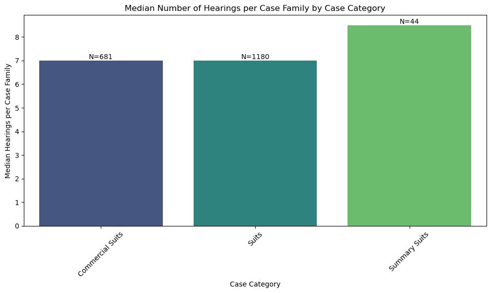
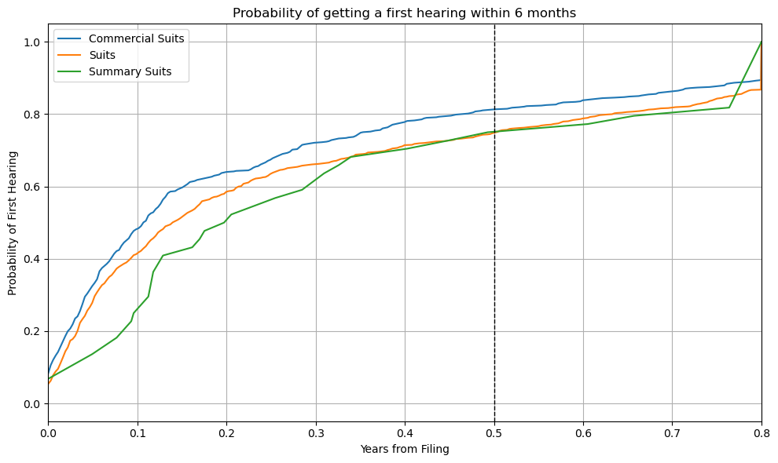
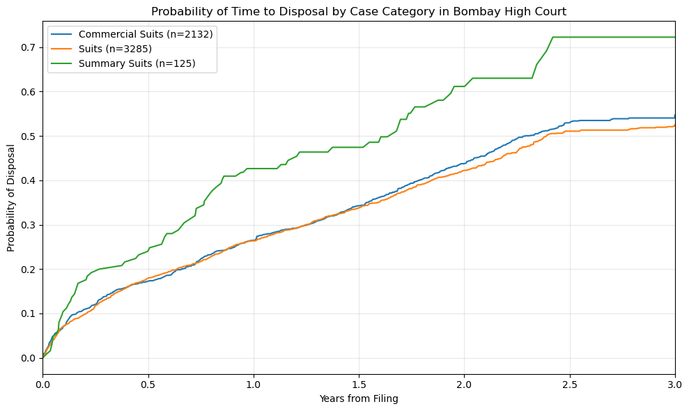
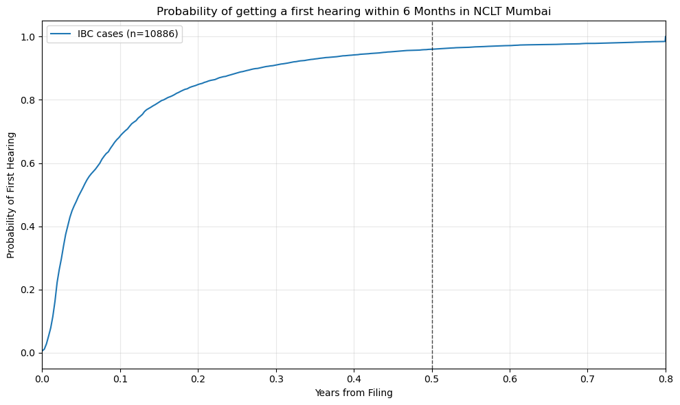
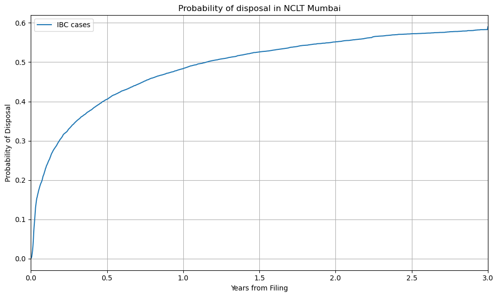

import pandas as pd
import numpy as np
import matplotlib.pyplot as plt
import seaborn as sns
from lifelines import KaplanMeierFitterCode for Survival analysis of Court Data
matters = pd.read_csv("data/matters.csv")
hearings = pd.read_csv("data/hearings.csv")
bhc_matters = matters[matters["court_name"].str.contains("Bombay High Court")]
bhc_hearings = hearings[hearings["court_name"].str.contains("Bombay High Court")]
nclt_matters = matters[matters["court_name"].str.contains("National Company Law Tribunal-mumbai")]
nclt_hearings = hearings[hearings["court_name"].str.contains("National Company Law Tribunal-mumbai")]Median Hearings by Category in BHC
# Step 1: Count hearings per matter
hearing_counts = bhc_hearings.groupby("matter_id")["hearing_id"].count().reset_index(name="hearing_count")
# Step 2: Map each matter to its main_matter_id
hearing_counts = hearing_counts.merge(
bhc_matters[["matter_id", "main_matter_id"]],
on="matter_id",
how="left"
)
# Step 3: Aggregate total hearings per case family (main_matter_id)
family_hearing_counts = hearing_counts.groupby("main_matter_id")["hearing_count"].sum().reset_index()
# Step 4: Get case_category of the main matter itself
main_matter_categories = bhc_matters[
bhc_matters["matter_id"] == bhc_matters["main_matter_id"]
][["main_matter_id", "case_category"]]
# Step 5: Merge family counts with the main matter's case category
family_hearing_counts = family_hearing_counts.merge(
main_matter_categories,
on="main_matter_id",
how="left"
)
# Step 6: Group by case_category and compute average hearings per family
hearing_counts_by_category = family_hearing_counts.groupby("case_category")["hearing_count"].median().reset_index()
hearing_counts_by_category.columns = ["case_category", "median_hearings"]
# Step 7: Plot with 'N' on top of bars
import matplotlib.pyplot as plt
import seaborn as sns
plt.figure(figsize=(10, 6))
barplot = sns.barplot(data=hearing_counts_by_category, x="case_category", y="median_hearings", palette="viridis")
# Add 'N' (number of case families) on top of each bar
category_counts = family_hearing_counts["case_category"].value_counts()
for i, bar in enumerate(barplot.patches):
category = hearing_counts_by_category["case_category"].iloc[i]
count = category_counts.get(category, 0) # Get the count for the category
height = bar.get_height()
barplot.text(
bar.get_x() + bar.get_width() / 2, # Center of the bar
height, # Slightly above the bar
f'N={count}', # Text to display
ha='center', va='bottom', fontsize=10
)
plt.title("Median Number of Hearings per Case Family by Case Category")
plt.xlabel("Case Category")
plt.ylabel("Median Hearings per Case Family")
plt.xticks(rotation=45)
plt.tight_layout()
plt.show()
# Diagnostics
print("Median hearings per case category:")
print(hearing_counts_by_category)
print(family_hearing_counts["case_category"].value_counts())/var/folders/40/x_nqdpg92_969rjtrr_h1l7r0000gn/T/ipykernel_92061/585339039.py:35: FutureWarning:
Passing `palette` without assigning `hue` is deprecated and will be removed in v0.14.0. Assign the `x` variable to `hue` and set `legend=False` for the same effect.
barplot = sns.barplot(data=hearing_counts_by_category, x="case_category", y="median_hearings", palette="viridis")
Median hearings per case category:
case_category median_hearings
0 Commercial Suits 7.0
1 Suits 7.0
2 Summary Suits 8.5
case_category
Suits 1180
Commercial Suits 681
Summary Suits 44
Name: count, dtype: int64Time to First Hearing in BHC
# Ensure datetime columns
bhc_hearings["hearing_date"] = pd.to_datetime(bhc_hearings["hearing_date"], errors="coerce")
bhc_matters["filing_date"] = pd.to_datetime(bhc_matters["filing_date"], errors="coerce")
first_hearings = (
bhc_hearings.groupby("matter_id")["hearing_date"].min().reset_index()
.merge(bhc_matters[["matter_id", "main_matter_id", "filing_date", "case_category"]], on="matter_id", how="left")
.groupby("main_matter_id")
.agg({
"hearing_date": "min",
"filing_date": "first",
"case_category": "first"
})
.reset_index()
)
first_hearings["time_to_hearing"] = (first_hearings["hearing_date"] - first_hearings["filing_date"]).dt.days / 365.25
first_hearings["event"] = first_hearings["hearing_date"].notna()
first_hearings["time_to_hearing"] = first_hearings["time_to_hearing"].clip(upper=0.8)
# Plot 1 - survival function by case_category
plt.figure(figsize=(10, 6))
kmf = KaplanMeierFitter()
for category, group in first_hearings.groupby("case_category"):
kmf.fit(group["time_to_hearing"], event_observed=group["event"], label=category)
plt.plot(kmf.survival_function_.index, 1 - kmf.survival_function_[category], label=category)
# Add vertical black dotted line at 0.5 years
plt.axvline(0.5, color="black", linestyle="--", linewidth=1)
plt.title("Probability of getting a first hearing within 6 months")
plt.xlabel("Years from Filing")
plt.ylabel("Probability of First Hearing")
plt.xlim(0, 0.8)
plt.grid(True)
plt.legend()
plt.tight_layout()
plt.savefig("images/bhc_time_to_first_hearing.png", dpi=300)
plt.show()/var/folders/40/x_nqdpg92_969rjtrr_h1l7r0000gn/T/ipykernel_92061/3692112833.py:2: SettingWithCopyWarning:
A value is trying to be set on a copy of a slice from a DataFrame.
Try using .loc[row_indexer,col_indexer] = value instead
See the caveats in the documentation: https://pandas.pydata.org/pandas-docs/stable/user_guide/indexing.html#returning-a-view-versus-a-copy
bhc_hearings["hearing_date"] = pd.to_datetime(bhc_hearings["hearing_date"], errors="coerce")
/var/folders/40/x_nqdpg92_969rjtrr_h1l7r0000gn/T/ipykernel_92061/3692112833.py:3: SettingWithCopyWarning:
A value is trying to be set on a copy of a slice from a DataFrame.
Try using .loc[row_indexer,col_indexer] = value instead
See the caveats in the documentation: https://pandas.pydata.org/pandas-docs/stable/user_guide/indexing.html#returning-a-view-versus-a-copy
bhc_matters["filing_date"] = pd.to_datetime(bhc_matters["filing_date"], errors="coerce")
Time to Disposal in BHC
bhc_matters = bhc_matters.copy()
bhc_matters["disposal_date"] = pd.to_datetime(bhc_matters["disposal_date"], errors="coerce")
bhc_matters["updated_on"] = pd.to_datetime(bhc_matters["updated_on"], errors="coerce")
bhc_matters["filing_date"] = pd.to_datetime(bhc_matters["filing_date"], errors="coerce")
# Define event (case is disposed)
bhc_matters["event"] = bhc_matters["case_status"] == "Disposed"
bhc_matters["duration"] = pd.NaT
disposed_mask = (bhc_matters["event"] &
bhc_matters["disposal_date"].notna() &
bhc_matters["filing_date"].notna())
if disposed_mask.any():
disposal_dates = bhc_matters.loc[disposed_mask, "disposal_date"]
filing_dates = bhc_matters.loc[disposed_mask, "filing_date"]
bhc_matters.loc[disposed_mask, "duration"] = (disposal_dates - filing_dates).dt.days
non_disposed_mask = (~bhc_matters["event"] &
bhc_matters["updated_on"].notna() &
bhc_matters["filing_date"].notna())
if non_disposed_mask.any():
updated_dates = bhc_matters.loc[non_disposed_mask, "updated_on"]
filing_dates = bhc_matters.loc[non_disposed_mask, "filing_date"]
bhc_matters.loc[non_disposed_mask, "duration"] = (updated_dates - filing_dates).dt.days
bhc_matters["duration_years"] = pd.to_numeric(bhc_matters["duration"], errors='coerce') / 365.25
bhc_matters["duration_years"] = bhc_matters["duration_years"].clip(upper=3.0)
km_data = bhc_matters.dropna(subset=["duration_years", "event"])
print(f"Data shape after cleaning: {km_data.shape}")
print(f"Event counts:\n{km_data['event'].value_counts()}")
plt.figure(figsize=(10, 6))
kmf = KaplanMeierFitter()
for category, group in km_data.groupby("case_category"):
if len(group) > 0:
kmf.fit(group["duration_years"], event_observed=group["event"], label=category)
plt.plot(kmf.survival_function_.index,
1 - kmf.survival_function_[category],
label=f"{category} (n={len(group)})")
plt.title("Probability of Time to Disposal by Case Category in Bombay High Court")
plt.xlabel("Years from Filing")
plt.ylabel("Probability of Disposal")
plt.xlim(0, 3)
plt.grid(True, alpha=0.3)
plt.legend()
plt.tight_layout()
plt.savefig("images/bhc_time_to_disposal.png", dpi=300) # dpi=300 for high resolution
plt.show()
print("\nSummary statistics by case category:")
for category, group in km_data.groupby("case_category"):
disposed_count = group["event"].sum()
total_count = len(group)
median_duration = group["duration_years"].median()
print(f"{category}: {disposed_count}/{total_count} disposed, median duration: {median_duration:.2f} years")/var/folders/40/x_nqdpg92_969rjtrr_h1l7r0000gn/T/ipykernel_92061/4197840282.py:17: FutureWarning: Setting an item of incompatible dtype is deprecated and will raise an error in a future version of pandas. Value '[814 155 12 ... 139 13 200]' has dtype incompatible with datetime64[ns], please explicitly cast to a compatible dtype first.
bhc_matters.loc[disposed_mask, "duration"] = (disposal_dates - filing_dates).dt.daysData shape after cleaning: (5542, 16)
Event counts:
event
False 3098
True 2444
Name: count, dtype: int64
Summary statistics by case category:
Commercial Suits: 978/2132 disposed, median duration: 1.62 years
Suits: 1394/3285 disposed, median duration: 1.52 years
Summary Suits: 72/125 disposed, median duration: 1.13 yearsIBC
# Ensure datetime columns
nclt_hearings["hearing_date"] = pd.to_datetime(nclt_hearings["hearing_date"], errors="coerce")
nclt_matters["filing_date"] = pd.to_datetime(nclt_matters["filing_date"], errors="coerce")
# Get first hearing date per matter_id
first_hearings_nclt = (
nclt_hearings.groupby("matter_id")["hearing_date"].min().reset_index()
.merge(nclt_matters[["matter_id", "filing_date"]], on="matter_id", how="left")
)
# Compute time to hearing in years
first_hearings_nclt["time_to_hearing"] = (
(first_hearings_nclt["hearing_date"] - first_hearings_nclt["filing_date"]).dt.days / 365.25
)
first_hearings_nclt["event"] = first_hearings_nclt["hearing_date"].notna()
first_hearings_nclt["time_to_hearing"] = first_hearings_nclt["time_to_hearing"].clip(upper=0.8)
plot_data = first_hearings_nclt.dropna(subset=["time_to_hearing", "event"])
# Print sample size information
print(f"Total cases with valid data: {len(plot_data)}")
print(f"Cases with first hearing: {plot_data['event'].sum()}")
print(f"Cases without first hearing (censored): {(~plot_data['event']).sum()}")
plt.figure(figsize=(10, 6))
kmf = KaplanMeierFitter()
kmf.fit(plot_data["time_to_hearing"], event_observed=plot_data["event"], label="IBC cases")
# Include sample size in the label
n_total = len(plot_data)
plt.plot(kmf.survival_function_.index,
1 - kmf.survival_function_["IBC cases"],
label=f"IBC cases (n={n_total})")
# Vertical line at 0.5 years
plt.axvline(0.5, color="black", linestyle="--", linewidth=1, alpha=0.7)
plt.title("Probability of getting a first hearing within 6 Months in NCLT Mumbai")
plt.xlabel("Years from Filing")
plt.ylabel("Probability of First Hearing")
plt.xlim(0, 0.8)
plt.grid(True, alpha=0.3)
plt.legend()
plt.tight_layout()
plt.savefig("images/nclt_time_to_first_hearing.png", dpi=300) # dpi=300 for high resolution
plt.show()
# Optional: Print probability at 6 months
try:
prob_at_6_months = kmf.cumulative_density_at_times(0.5).iloc[0]
print(f"\nProbability of first hearing within 6 months: {prob_at_6_months:.1%}")
except:
print("\nCould not calculate probability at exactly 6 months")Total cases with valid data: 10886
Cases with first hearing: 10886
Cases without first hearing (censored): 0/var/folders/40/x_nqdpg92_969rjtrr_h1l7r0000gn/T/ipykernel_92061/2710763364.py:2: SettingWithCopyWarning:
A value is trying to be set on a copy of a slice from a DataFrame.
Try using .loc[row_indexer,col_indexer] = value instead
See the caveats in the documentation: https://pandas.pydata.org/pandas-docs/stable/user_guide/indexing.html#returning-a-view-versus-a-copy
nclt_hearings["hearing_date"] = pd.to_datetime(nclt_hearings["hearing_date"], errors="coerce")
/var/folders/40/x_nqdpg92_969rjtrr_h1l7r0000gn/T/ipykernel_92061/2710763364.py:3: SettingWithCopyWarning:
A value is trying to be set on a copy of a slice from a DataFrame.
Try using .loc[row_indexer,col_indexer] = value instead
See the caveats in the documentation: https://pandas.pydata.org/pandas-docs/stable/user_guide/indexing.html#returning-a-view-versus-a-copy
nclt_matters["filing_date"] = pd.to_datetime(nclt_matters["filing_date"], errors="coerce")
Probability of first hearing within 6 months: 96.0%# Ensure datetime formats
nclt_matters["filing_date"] = pd.to_datetime(nclt_matters["filing_date"], errors="coerce")
nclt_matters["disposal_date"] = pd.to_datetime(nclt_matters["disposal_date"], errors="coerce")
nclt_matters["updated_on"] = pd.to_datetime(nclt_matters["updated_on"], errors="coerce")
# Event occurred if case is disposed
nclt_matters["event"] = nclt_matters["case_status"] == "Disposed"
# Duration = disposal_date - filing_date (or updated_on if not disposed)
nclt_matters["duration_days"] = np.where(
nclt_matters["event"],
(nclt_matters["disposal_date"] - nclt_matters["filing_date"]).dt.days,
(nclt_matters["updated_on"] - nclt_matters["filing_date"]).dt.days
)
nclt_matters["duration_years"] = nclt_matters["duration_days"] / 365.25
# Clip to 3 years
nclt_matters["duration_years"] = nclt_matters["duration_years"].clip(upper=3.0)
# Drop rows with missing duration or event
plot_data_nclt_disposed = nclt_matters.dropna(subset=["duration_years", "event"])
# Plot Kaplan-Meier survival curve
plt.figure(figsize=(10, 6))
kmf = KaplanMeierFitter()
kmf.fit(plot_data_nclt_disposed["duration_years"], event_observed=plot_data_nclt_disposed["event"], label="IBC cases")
plt.plot(kmf.survival_function_.index, 1 - kmf.survival_function_["IBC cases"], label="IBC cases")
plt.title("Probability of disposal in NCLT Mumbai")
plt.xlabel("Years from Filing")
plt.ylabel("Probability of Disposal")
plt.xlim(0, 3)
plt.grid(True)
plt.legend()
plt.tight_layout()
plt.savefig("images/nclt_time_to_disposal_probability.png") # dpi=300 for high resolution
plt.show()/var/folders/40/x_nqdpg92_969rjtrr_h1l7r0000gn/T/ipykernel_92061/3064410175.py:2: SettingWithCopyWarning:
A value is trying to be set on a copy of a slice from a DataFrame.
Try using .loc[row_indexer,col_indexer] = value instead
See the caveats in the documentation: https://pandas.pydata.org/pandas-docs/stable/user_guide/indexing.html#returning-a-view-versus-a-copy
nclt_matters["filing_date"] = pd.to_datetime(nclt_matters["filing_date"], errors="coerce")
/var/folders/40/x_nqdpg92_969rjtrr_h1l7r0000gn/T/ipykernel_92061/3064410175.py:3: SettingWithCopyWarning:
A value is trying to be set on a copy of a slice from a DataFrame.
Try using .loc[row_indexer,col_indexer] = value instead
See the caveats in the documentation: https://pandas.pydata.org/pandas-docs/stable/user_guide/indexing.html#returning-a-view-versus-a-copy
nclt_matters["disposal_date"] = pd.to_datetime(nclt_matters["disposal_date"], errors="coerce")
/var/folders/40/x_nqdpg92_969rjtrr_h1l7r0000gn/T/ipykernel_92061/3064410175.py:4: SettingWithCopyWarning:
A value is trying to be set on a copy of a slice from a DataFrame.
Try using .loc[row_indexer,col_indexer] = value instead
See the caveats in the documentation: https://pandas.pydata.org/pandas-docs/stable/user_guide/indexing.html#returning-a-view-versus-a-copy
nclt_matters["updated_on"] = pd.to_datetime(nclt_matters["updated_on"], errors="coerce")
/var/folders/40/x_nqdpg92_969rjtrr_h1l7r0000gn/T/ipykernel_92061/3064410175.py:7: SettingWithCopyWarning:
A value is trying to be set on a copy of a slice from a DataFrame.
Try using .loc[row_indexer,col_indexer] = value instead
See the caveats in the documentation: https://pandas.pydata.org/pandas-docs/stable/user_guide/indexing.html#returning-a-view-versus-a-copy
nclt_matters["event"] = nclt_matters["case_status"] == "Disposed"
/var/folders/40/x_nqdpg92_969rjtrr_h1l7r0000gn/T/ipykernel_92061/3064410175.py:10: SettingWithCopyWarning:
A value is trying to be set on a copy of a slice from a DataFrame.
Try using .loc[row_indexer,col_indexer] = value instead
See the caveats in the documentation: https://pandas.pydata.org/pandas-docs/stable/user_guide/indexing.html#returning-a-view-versus-a-copy
nclt_matters["duration_days"] = np.where(
/var/folders/40/x_nqdpg92_969rjtrr_h1l7r0000gn/T/ipykernel_92061/3064410175.py:15: SettingWithCopyWarning:
A value is trying to be set on a copy of a slice from a DataFrame.
Try using .loc[row_indexer,col_indexer] = value instead
See the caveats in the documentation: https://pandas.pydata.org/pandas-docs/stable/user_guide/indexing.html#returning-a-view-versus-a-copy
nclt_matters["duration_years"] = nclt_matters["duration_days"] / 365.25
/var/folders/40/x_nqdpg92_969rjtrr_h1l7r0000gn/T/ipykernel_92061/3064410175.py:18: SettingWithCopyWarning:
A value is trying to be set on a copy of a slice from a DataFrame.
Try using .loc[row_indexer,col_indexer] = value instead
See the caveats in the documentation: https://pandas.pydata.org/pandas-docs/stable/user_guide/indexing.html#returning-a-view-versus-a-copy
nclt_matters["duration_years"] = nclt_matters["duration_years"].clip(upper=3.0)
matters.case_typology.value_counts()case_typology
Interlocutory Application (I.B.C) 11922
Original_INTERIM APPLICATION 2708
Company Petition IB (IBC) 2701
Original_SUITS 1307
Original_Commercial Suit 697
Original_LEAVE PETITION 213
Original_COMMERCIAL SUMMARY SUITS 208
Original_CHAMBER ORDER LODGING 124
Intervention Petition (IBC) 113
Company Appeal (IBC) 111
Original_SUMMONSES FOR JUDGEMENT 98
Restoration Application (IBC) 94
Original_APPEALS (OS) 77
Original_SUMMARY SUITS. 53
Miscellaneous Application (IBC) 52
Contempt Petition (IBC) 51
Original_CONTEMPT PETITION 22
Original_COURT RECEIVERS REPORT 21
Interlocutory Application(IBC)(Liq.) 10
Original_COUNTER CLAIM 10
Restored Company Petition (IBC) 10
Interlocutory Application(IBC)(Plan) 8
Interlocutory Application(IBC)(Dis.) 4
Insolvency & Bankruptcy (Pre-Packaged) 3
Original_In Person Application 3
Original_REVIEW PETITION 2
Transfer Petition (IBC) 2
Original_Review Petition in Commercial Division matters 2
Original_REVIEW PETITION IN APPEAL. 1
Original_TRANSFER DECREE 1
Transfer Application (IBC) 1
Cross Application (IBC) 1
Name: count, dtype: int64